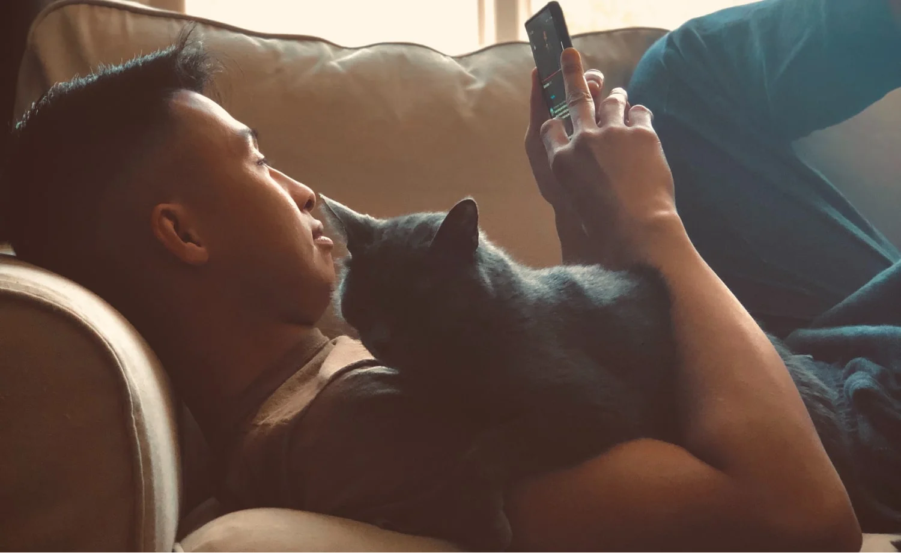

Ваш керівник щиро був націлений на результат та не розумів, що буває досить грубим, а подруга щиро вважає, що своїми балачками вона розважає людей та підтрмує гарний настрій в колективі.
Червоний – справжня буря
Червоні – це люди, у яких присутній справжній драйв, жага до пригод та постійної динаміки. Це цілеспрямовані особистості, які ставлять собі цілі та впевнено крокують до них, незважаючи на будь-що, в тому числі і людей.
Разом з тим, вони дуже вибухові, завжди говорять прямо, не думаючи за наслідки, ладні “йти по головах”. Червоного дуже легко розпізнати в натовпі і якщо вам зустрічалася така людина, ви зараз точно зрозумієте, про кого це.
- Екстравертивні.
- Націлені на результат.
- Мають лідерські якості (дуже часто обіймають керівні посади).
- Енергійні.
- Запальні, їх дуже легко вивести з себе і так само легко вони заспокоюються.
- Лаконічні, завжди говорять коротко, але по суті.
- Впевнені в собі.
- Щирі, завжди говорять все, про що думають, інколи не вибираючи слів, через що інші кольори вважають їх грубими.
- Люблять ризикувати.
- Їх мотивує конкуренція та прагнення показати, що вони найкращі. Це ті люди, які будуть ініціювати спір ігри по типу “хто швидше”.
- Завжди спішать, цінують свій час, через що раптово можуть покинути зустріч, якщо вона їм нецікава або їздити по полосі для автобусу, щоб уникнути затор.
- Вітають зміни, люблять новизну.
- Прямолінійні, завжи говорять правду в очі, за що іншим людям можуть здаватися грубими.
- Егоїсти.
Жовтий – душа компанії
Це дуже життєрадісні, привітні люди. Вони ладні побачити щось хороше в будь-яких обставинах та ситуаціях. А ще дуже обожнюють людей та спілкування з ними, багато жартують. Ці люди найкращі оратори серед всіх кольорів, вони вміють зацікавити публіку та комфортно почуваються в цьому, саме тому часто займаються артистичною діяльністю (коміки, ведучі і т.д.). Разом з тим, вміння спілкуватися з людьми робить їх хорошими продавцями абсолютно в різних сферах. Так само, як і червоні, люди цього типу зустрічаються досить нечасто, тому якщо ви їх зустрічали в житті, то точно зрозумієте, про кого мова.
- Екстравертивні.
- Чудові оратори.
- Вміють переконувати.
- Люблять жартувати.
- Оптимісти.
- Ідейні, практично не мають тих обмежуючих рамок, які мають інші кольори (недостатність ресурсів, страх провалу тощо).
- Винахідливі.
- Можуть бути досить легковажними, не запам’ятовують, що говорять інші люди.
- Як правило, погані слухачі, більше люблять говорити, ніж слухати, перебивають.
- Досить егоцентричні, часто говорять лише про себе і не чують інших.
- Часто спонтанно переходять на різні теми, через що втрачають концентрацію, зокрема, в роботі.
- Люблять спілкування, інколи навіть забагато говорять, навіть так, що займають весь простір.
Зелений – затятий консерватор
Людей цього типу зустрічається найбільше серед нас. Це досить спокійні, врівноважені люди, які намагаються уникати конфліктів та триматися осторонь. З ними дуже легко мати справу. Вони можуть спокійно вислухати, не будуть ображати чи критикувати, тягнути ковдру на себе чи заздрити. Це дуже врівноважені люди, які переважно тримають емоції в собі та уникають конфліктів.
- Переважно інтровертивні.
- Консерватори, чинять опір змінам, їм дуже важко змінити ставлення до чогось, яке інколи буває досить упередженим.
- Дуже цінують свою зону комфорту.
- Емпатичні, завжди готові прийти на допомогу.
- Сповільнені, неспішні.
- Врівноважені, терплячі.
- Дуже рідко показують емоції, переважно тримають їх в собі.
- Вміють слухати, співпереживати.
- В багатьох ситуаціях пасивні, безініціативні.
- Надійні.
- Передбачувані.
- Дружелюбні, гарні друзі.
- Командні гравці.
- Їм важливо турбуватися про інших.
- Прагнуть з’єднатися з натовпом, бути непомітними.
- Не люблять просити про допомогу.
Синій – виважений інтроверт
Цей тип особистості заслуговує особливої уваги. Сині дуже спокійні та вибагливі люди. Якщо ви прийдете в гості до синього, ви побачите ідеальний порядок, особливі схеми сортування речей, маркування, який гачок для ключів від дому, а який для автівки. Кожна річ має лежати на своєму місці. Сині – педанти і дуже цінують порядок та впорядкованість. Багато людей вважать їх пессимістами, але вони думають, що вони реалісти.
- Інтровертивні.
- Роблять акцент на якості роботи, дуже сумлінні працівники.
- Досить закриті в плані емоцій.
- Концентруються на деталях.
- Вимогливі.
- Уважні.
- Люблять порядок і планування, системні.
- Перфекціоністи, іноді навіть педанти.
- Часто сумні, депресивні.
- Скромні, не прагнуть зізнання, незважаючи на високі заслуги.
- Дуже багато читають, прагнуть дізнаватися якомога більше про різні сфери життя.
- Ставлять якість на перший план, чого б це не стосувалося.
- Турботливі.
- Виважені, дуже довго думають та вивчають перед тим, як здійснити важливу покупку чи відкрити власну справу.
- Не люблять ризикувати.
- Пунктуальні.
- Переважає логічне та раціональне мислення.
- Уникають знаходитися в центрі уваги.
Змішані типи людей
Думаю, читаючи опис, ви, ймовірно, впізнали свої риси одразу в декількох типах. І це нормально, адже досить рідко в
світі зустрічаються представники “чистих” кольорів. Згідно статиститиці, таких людей всього біля 5%. Біля 80% мають риси
двух кольорів, всі інші – трьох. Згідно словам автора, особистостей з рисами всіх чьотирьох типів не існує. Найбільш
поширеними є поєднання двох кольорів з сусідніх сегментів (див. схему вище), проте зустрічаються також досить контрасні
поєднання.
Якщо когось важко розгадати, якого він кольору, ймовірно, від представник трьохколірної групи.